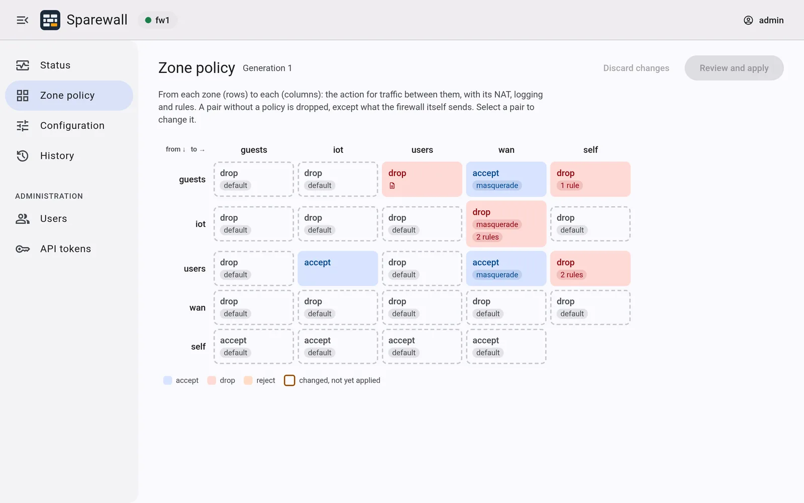
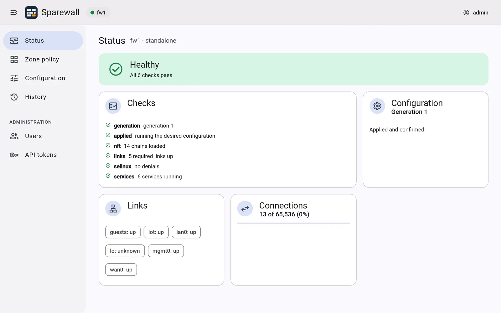
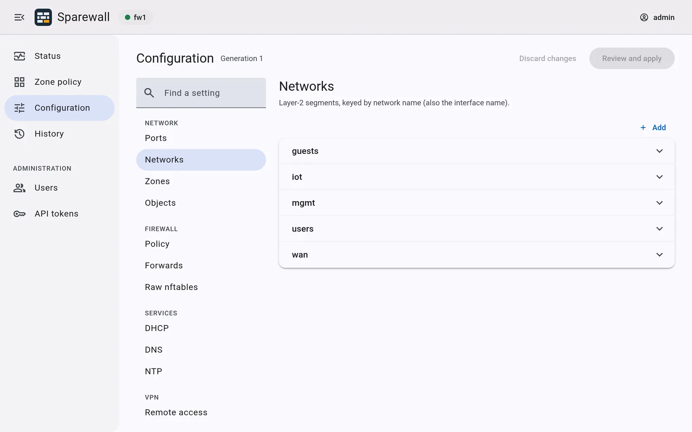

One document.
One image.
One node or a pair.
Sparewall is an open-source, image-based Linux firewall. Describe the whole deployment in one versioned document; every change is validated, applied atomically, and rolled back unless you confirm it. Drive it from the CLI, the HTTP API or, from 0.3.0, a web UI.
site.yaml
schema: 1
cluster: { nodes: [fw1] }
management: { network: mgmt }
ports:
fw1:
uplink: { nic: "52:54:00:aa:00:01" }
networks:
mgmt: { port: uplink, role: management,
addresses: { fw1: 10.0.99.2/24 } }
wan: { port: uplink, vlan: 10, role: wan,
dhcp_client: true }
users: { port: uplink, vlan: 20,
addresses: { fw1: 192.0.2.2/24 },
vip: 192.0.2.1/24 }
zones:
wan: { networks: [wan] }
users: { networks: [users] }
policy:
users->wan: { action: accept, nat: masquerade }
wan->self: { action: drop }
dhcp:
users: { pool: 192.0.2.100-192.0.2.199 }A firewall you can reason about
Sparewall treats a firewall like any other piece of infrastructure: declared, versioned, reviewable, and safe to change.
Image-based and rollback-safe
The OS is a signed bootc image. An upgrade is a reboot into the new image; a rollback is a reboot into the old one.
One source of truth
One JSON or YAML document describes ports, networks, zones, policy, NAT and services. Every change becomes a numbered generation you can diff, list and roll back to.
Changes that undo themselves
Apply with a confirm timer. If the change cuts you off, the node reverts on its own. Anti-lockout keeps the management path open.
HA when wanted, not required
The same image and document shape run one node or an active/standby pair, with VRRP, connection-state sync and DHCP failover over a WireGuard tunnel. sparewall failover moves the gateway back when you choose.
Zones plus raw rules
Write policy between zones for the common case, and drop to raw nftables rules when you need to. Sparewall owns its own table and never flushes anyone else's.
Swappable services
DHCP, DNS and time run as containerized providers behind a stable interface: Kea, Unbound and chrony by default.
Rolling, health-gated upgrades
Run sparewall upgrade on either node of a pair: the backup goes first, and the master follows only once it is healthy. Nodes accept only signed images.
Users, roles and tokens
Named users with passwords, and API tokens for scripts, each with a role: monitor, viewer, operator or admin. Secrets are sealed on the node and shared with the peer.
A CLI for your workstation
Manage nodes over SSH from Linux or macOS, x86_64 or arm64. Install it with Homebrew, or take a static binary from the release.
A web UI, when you want one New in 0.3.0
From 0.3.0, a node can serve a web UI and an HTTP API on its management network. Both stay off until the document turns them on with sparewall set management.web=true. SSH, the console and the CLI never depend on them.



- Each page offers only what the user's role allows, and the node checks every call regardless.
- Admins manage users and tokens there too. A new password is hashed in the browser, so only the hash reaches the node.
- The UI loads nothing from outside the node.
- Scripts use the same API with a token:
POST /call/<interface>.<Method>, described by an OpenAPI 3.1 document at/openapi.json.
How a change happens
The sparewall CLI is a thin client for sparewalld, the coordinator on each node. The coordinator is the only thing that writes daemon configuration.
- ValidateThe schema first, then semantic checks: overlapping subnets, rules naming missing zones, pools outside their subnet.
- Render and dry-runPure renderers produce networkd, nftables, keepalived and provider configuration, and each file is checked by its own tool.
- ActivateThe new generation goes live as a unit, reloading only what changed, and the confirm timer starts.
- Confirm or revertConfirm to keep it. Miss the deadline and the previous generation comes back, so a change that cuts off your access undoes itself.
- Sync the peerIn a pair, the confirmed generation is pushed through the sync tunnel and goes through the same steps on the other node.
shell
$ sparewall apply -f site.yaml --confirm 120
# reverts in 120s unless confirmed
$ sparewall confirm
$ sparewall set networks.users.vip=192.0.2.254/24
$ sparewall get policy.'users->wan' -o yaml
$ sparewall historyInstall
Every release carries an installer, disk images and the CLI, with SBOMs and signed checksums. The image is also at ghcr.io/sparewall/sparewall, and nodes on the stable channel are offered each new release.
1. The CLI
On Linux or macOS, x86_64 or arm64:
$ brew install sparewall/tap/sparewall2. A node
Boot the ISO to install unattended to a blank disk, write the raw image to a disk, or use the qcow2 image for a virtual machine. All three are on the latest release.
3. Verify
Check the downloads against the project key, cosign.pub:
cosign verify-blob --key cosign.pub \
--bundle SHA256SUMS.sigstore.json SHA256SUMS
sha256sum -c --ignore-missing SHA256SUMSGetting started takes a node from a fresh install to a working firewall.
Built from standard parts
Almost everything in Sparewall is software you already know. The new code is the coordinator, its CLI and its HTTP gateway, written in Rust, and the web UI.
- systemd-networkd
- nftables
- keepalived
- conntrackd
- WireGuard
- Podman
- Kea
- Unbound
- chrony
- bootc
- Varlink
- Angular
- sparewalld
- sparewall
- sparewall-httpd
Roadmap
Sparewall is built bottom-up, and each milestone ends with tests that run in CI. Releases so far are 0.x: usable, but the schema and the APIs may still change before 1.0. The full plan is in the design document.
- 0FoundationsCI, a signed bootc image, license gates0.1.0
- 1Standalone coreCoordinator, CLI, schema v1, confirm and rollback0.1.0
- 2ServicesDHCP, DNS, time, metrics, backup and restore0.1.0
- 3High availabilityActive/standby pairs, flow and lease continuity0.1.0
- 4Access and secretsUsers and roles, ACME, remote-access WireGuard0.1.0
- 5Releases and upgradesChannels, health-gated upgrades, installers0.1.0
- 6Production0.x releases at real sites: hardening, benchmarks, documentationIn progress
- 7Web UI and HTTP APIOpt-in, with roles for every user; then 1.00.3.0, then 1.0
Get involved
Sparewall is free software under the GNU GPL v3. Issues, design feedback and pull requests are welcome.
Read the docs
Getting started, operations, pairing, the HTTP API, and the full design.
Report an issue
Bugs, questions and ideas go on the issue tracker.
Contribute
How to build, test and send changes.